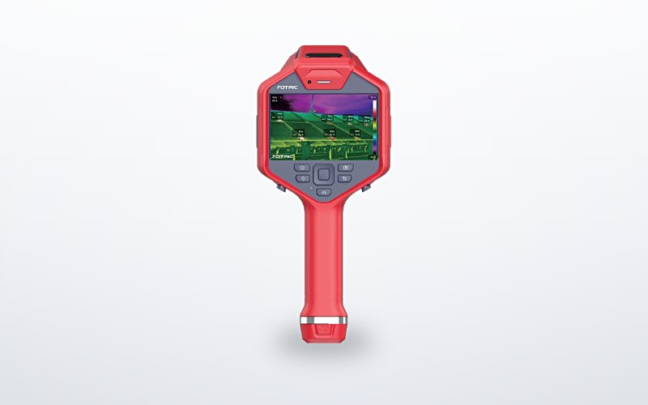

手持式热像仪
FOTRIC 348L
FOTRIC 飞础科
- 热像探测器物理像素 640×480，温度灵敏度 NETD <25mK@30℃
- 测温范围 -20℃~+650℃，支持 1200℃ 高温扩展
- 不少于 20 个可移动点、20 个可移动区域、20 条可移动直线分析，支持区域发射率
- USB 传输全辐射热像视频流，HDMI 输出非辐射热像视频流
- 可配置显微镜镜头，点分辨率不高于 50μm；复合调色聚焦成像与高温差均衡成像
- 专业分析软件：最多 10 窗口同步测试，录制全辐射视频流，单文件存储深度达 1TB
- 支持超温/低温/极差值三种在线报警，温升曲线可叠加对比并导入 Excel 二次分析
画册 P05询价 ›